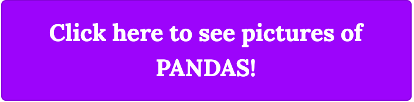

Introduction
For my experiment I asked a few people I know to take a look at my blog and suggest any changes they felt might help users engage more with the site. After hearing some of their recommendations, it was pretty much unanimous that the CTA button I had set for my goal to “Click to see pictures of pandas” did not really do much to catch the eye. I decided that this would make a great focus to conduct a content experiment on.
 Original CTA Button
Original CTA Button
The Process:
To get the content experiment started, I followed the steps outlined in our resources and utilized Google Optimize to get the A/B test set up and scheduled, as well to make changes to the CTA button.
I wanted to update the button in a way that was guaranteed to catch the users eye and hopefully result in more goal conversions, so I decided bright purple with white text would stand out well:
 Updated CTA ButtonThe process of setting up was not flawless - I did run into an issue and had to start over again at one point, but I was eventually able to get the test up and running. It was nice being able to use the Optimize Installation tool under Settings to verify that everything was installed correctly.
The Results:
To make sure I obtained enough data to have a proper analysis of this test, I scheduled for it to run for several days to obtain as many views as possible. It is currently still running, so I will have to update this report when it completes. However, I asked a few people to review my blog again and tell me their thought which so far have confirmed my original hypothesis of updating the CTA link to make it more visually appealing will result in more goal conversions and help lower the bounce rate on my homepage.